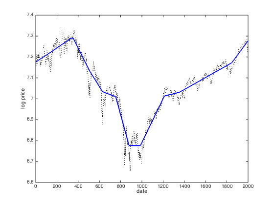

% Written for CVX by Kwangmoo Koh - 12/10/07 % % The problem of estimating underlying trends in time series data arises in % a variety of disciplines. The l1 trend filtering method produces trend % estimates x that are piecewise linear from the time series y. % % The l1 trend estimation problem can be formulated as % % minimize (1/2)*||y-x||^2+lambda*||Dx||_1, % % with variable x , and problem data y and lambda, with lambda >0. % D is the second difference matrix, with rows [0... -1 2 -1 ...0] % % CVX is not optimized for the l1 trend filtering problem. % For large problems, use l1_tf (www.stanford.edu/~boyd/l1_tf/). % load time series data y = csvread('snp500.txt'); % log price of snp500 n = length(y); % form second difference matrix e = ones(n,1); D = spdiags([e -2*e e], 0:2, n-2, n); % set regularization parameter lambda = 50; % solve l1 trend filtering problem cvx_begin variable x(n) minimize( 0.5*sum_square(y-x)+lambda*norm(D*x,1) ) cvx_end % plot estimated trend with original signal figure(1); plot(1:n,y,'k:','LineWidth',1.0); hold on; plot(1:n,x,'b-','LineWidth',2.0); hold off; xlabel('date'); ylabel('log price');
Calling SDPT3 4.0: 5998 variables, 1999 equality constraints
------------------------------------------------------------
num. of constraints = 1999
dim. of socp var = 5998, num. of socp blk = 1999
*******************************************************************
SDPT3: Infeasible path-following algorithms
*******************************************************************
version predcorr gam expon scale_data
NT 1 0.000 1 0
it pstep dstep pinfeas dinfeas gap prim-obj dual-obj cputime
-------------------------------------------------------------------
0|0.000|0.000|2.0e+01|4.4e+01|6.4e+06| 1.413023e+05 0.000000e+00| 0:0:00| spchol 1 1
1|1.000|0.990|6.9e-06|4.6e-01|2.0e+05| 1.350438e+05 -1.049768e+03| 0:0:00| spchol 1 1
2|1.000|0.981|3.3e-06|9.1e-03|1.4e+04| 1.391107e+04 -2.044949e+01| 0:0:00| spchol 1 1
3|0.976|1.000|1.8e-06|2.1e-05|3.3e+02| 3.308001e+02 -7.132347e-01| 0:0:00| spchol 1 1
4|0.791|1.000|4.7e-06|2.4e-06|7.9e+01| 7.921631e+01 3.597732e-01| 0:0:00| spchol 1 1
5|0.879|0.776|7.8e-07|1.2e-06|2.1e+01| 2.193851e+01 7.904977e-01| 0:0:00| spchol 1 1
6|0.686|0.454|3.1e-07|8.3e-07|9.6e+00| 1.059057e+01 9.496103e-01| 0:0:00| spchol 1 1
7|0.634|0.493|1.5e-07|4.8e-07|5.1e+00| 6.224659e+00 1.075590e+00| 0:0:00| spchol 1 1
8|1.000|0.467|3.6e-08|2.9e-07|1.5e+00| 2.660531e+00 1.177521e+00| 0:0:00| spchol 1 1
9|0.597|0.769|4.0e-08|7.4e-08|7.6e-01| 2.088589e+00 1.326237e+00| 0:0:00| spchol 1 1
10|0.958|0.676|1.7e-09|3.2e-08|1.9e-01| 1.569314e+00 1.378039e+00| 0:0:00| spchol 1 1
11|0.745|0.795|4.3e-10|6.9e-09|7.1e-02| 1.468227e+00 1.396971e+00| 0:0:00| spchol 1 1
12|0.645|0.713|1.5e-10|2.1e-09|3.4e-02| 1.433864e+00 1.400142e+00| 0:0:00| spchol 1 2
13|0.772|0.854|3.5e-11|3.3e-10|1.1e-02| 1.412357e+00 1.401233e+00| 0:0:00| spchol 1 2
14|0.702|0.779|1.0e-11|8.0e-11|4.7e-03| 1.406181e+00 1.401526e+00| 0:0:00| spchol 2 2
15|0.876|0.877|1.3e-12|1.2e-11|9.4e-04| 1.402540e+00 1.401600e+00| 0:0:00| spchol 2 2
16|0.559|0.946|6.5e-13|1.6e-12|5.0e-04| 1.402114e+00 1.401616e+00| 0:0:00| spchol 2 2
17|0.565|0.994|1.2e-12|1.0e-12|2.6e-04| 1.401883e+00 1.401618e+00| 0:0:00| spchol 2 2
18|0.564|1.000|7.4e-13|1.0e-12|1.4e-04| 1.401759e+00 1.401618e+00| 0:0:00| spchol 2 2
19|0.565|1.000|1.4e-11|1.0e-12|7.5e-05| 1.401694e+00 1.401618e+00| 0:0:00| spchol 2 2
20|0.558|1.000|9.3e-12|1.5e-12|4.1e-05| 1.401659e+00 1.401618e+00| 0:0:00| spchol 2 2
21|0.560|1.000|1.5e-11|1.9e-12|2.2e-05| 1.401640e+00 1.401618e+00| 0:0:01| spchol 2 2
22|0.553|1.000|2.7e-11|2.8e-12|1.2e-05| 1.401630e+00 1.401618e+00| 0:0:01| spchol 2 2
23|0.555|1.000|2.3e-11|4.2e-12|6.4e-06| 1.401625e+00 1.401618e+00| 0:0:01| spchol 2 2
24|0.557|1.000|2.7e-12|4.6e-12|3.5e-06| 1.401622e+00 1.401618e+00| 0:0:01| spchol 2 2
25|0.559|1.000|6.9e-11|1.0e-12|1.9e-06| 1.401620e+00 1.401618e+00| 0:0:01| spchol 2 2
26|0.561|1.000|1.2e-10|1.5e-12|1.0e-06| 1.401619e+00 1.401618e+00| 0:0:01| spchol 2 2
27|0.562|1.000|1.1e-10|2.2e-12|5.4e-07| 1.401619e+00 1.401618e+00| 0:0:01| spchol 2 2
28|0.564|1.000|4.2e-11|3.4e-12|2.9e-07| 1.401618e+00 1.401618e+00| 0:0:01| spchol 2 2
29|0.565|0.988|6.8e-12|5.1e-12|1.5e-07| 1.401618e+00 1.401618e+00| 0:0:01| spchol 2 2
30|0.566|0.959|6.1e-12|1.6e-12|8.2e-08| 1.401618e+00 1.401618e+00| 0:0:01| spchol 2 2
31|0.567|0.971|2.4e-12|1.3e-12|4.4e-08| 1.401618e+00 1.401618e+00| 0:0:01|
stop: max(relative gap, infeasibilities) < 1.49e-08
-------------------------------------------------------------------
number of iterations = 31
primal objective value = 1.40161820e+00
dual objective value = 1.40161815e+00
gap := trace(XZ) = 4.37e-08
relative gap = 1.15e-08
actual relative gap = 1.15e-08
rel. primal infeas (scaled problem) = 2.39e-12
rel. dual " " " = 1.26e-12
rel. primal infeas (unscaled problem) = 0.00e+00
rel. dual " " " = 0.00e+00
norm(X), norm(y), norm(Z) = 2.1e+00, 1.5e+03, 2.7e+03
norm(A), norm(b), norm(C) = 1.2e+02, 2.2e+00, 2.2e+03
Total CPU time (secs) = 0.79
CPU time per iteration = 0.03
termination code = 0
DIMACS: 2.7e-12 0.0e+00 5.5e-11 0.0e+00 1.1e-08 1.1e-08
-------------------------------------------------------------------
------------------------------------------------------------
Status: Solved
Optimal value (cvx_optval): +1.40162
